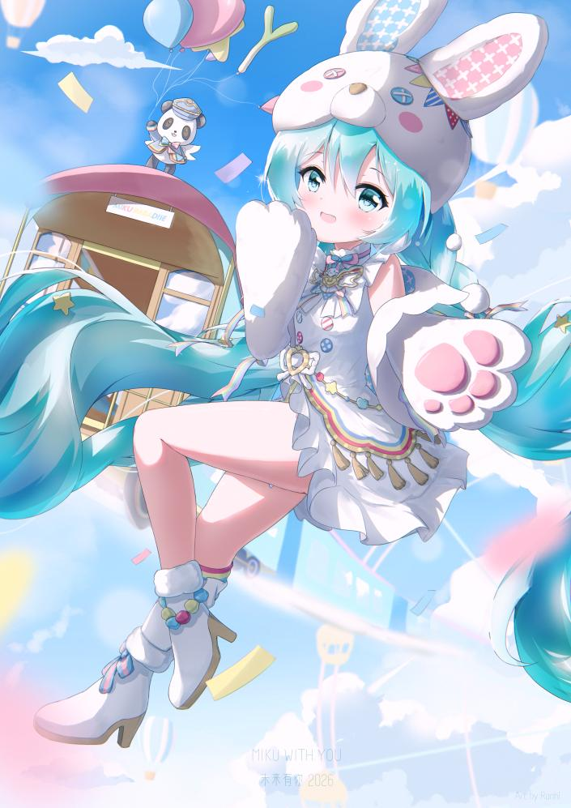

01 / ILLUSTRATION
MIKU WITH YOU 2026
Hatsune Miku / Illustration
- DATE
- 2026.09
- TOOLS
- Photoshop
- TIME
- 14 h
- CANVAS
- 3508 × 4961 px
NOTES
「未来有你2026」の衣装をもとに、カーニバルの祝祭感をテーマとして制作しました。空中に浮かぶ初音ミクを中心に、遠くへ伸びる列車や遊園地のモチーフを配置し、奥行きと広がりのある画面構成を意識しています。背景のキャラクターや2種類の表情差分によって、にぎやかで遊び心のある世界観を表現しました。